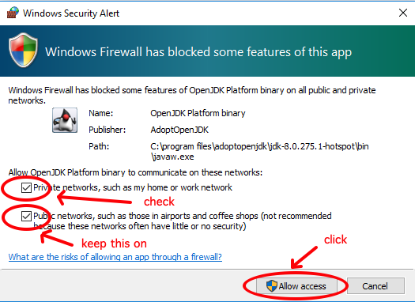

Download and Installation of YaCy
YaCy is available as packages for Linux, Windows, Macintosh and also as Docker Image. You can also install YaCy on any other operation system either by compiling it yourself or using a tarball. YaCy needs Java 8, OpenJDK 8 is recommended.
Please Support YaCy
YaCy is libre software - licensed GPL-2+. Downloads are provided free, with the option to donate:

One-Time Donation
You may also download and try out YaCy first and come back later to donate. Please help!
Installation
Installation is very easy on any system. If it looks complex here it's just because we give directions in great detail.
YaCy for Windows
- IMPORTANT Install Java 8 from https://adoptopenjdk.net/ first.
- Download YaCy for Windows from https://download.yacy.net/yacy_v1.924_20201214_10042.exe
- Install YaCy by double-clicking the downloaded installer.
- When the message "Windows protected your PC (in Windows 10) appears, klick "More info", then "Run anyway". When asked "Do you want to allow this app from an unknown publisher to make changes to your device", klick "yes".
- Within the YaCy Installer, klick "Next", "I Agree", "Next", "Install", "Finish".
- To run YaCy, double-click the YaCy app icon (which may be on your desktop).
- Whenever the following dialog appears click "allow private networks" and "allow access" 
- YaCy is then running on port 8090 on your machine. Open http://localhost:8090 in your web-browser.
YaCy for Linux and other OS
You must install Java 8 on your computer if you don't have it already, and start the YaCy start shell script. YaCy can run under a normal user account, no root rights are needed if Java 8 is already installed.
- Install JDK 8 (Oracle or preferably OpenJDK). You get Java for Linux from https://adoptopenjdk.net/ but you should follow the installer package system that comes with your linux distribution.
-
Download generic YaCy from https://download.yacy.net/yacy_v1.924_20210209_10069.tar.gz, i.e. by
-
Unpack the tarball.
- Run
startYACY.shinside your decompressed folder.
wget https://download.yacy.net/yacy_v1.924_20210209_10069.tar.gz
This can be done by running in a terminal:
sudo apt-get update
sudo dpkg --configure -a
sudo apt-get install -y openjdk-8-jre-headless
wget https://download.yacy.net/yacy_v1.924_20210209_10069.tar.gz
tar xfz yacy_v1.924_20210209_10069.tar.gz
cd yacy
./startYACY.sh
- YaCy is now running on port 8090 on your machine. Open http://localhost:8090 in your web-browser.
- No password is required when accessing this YaCy instance from localhost.
- Headless operation can be achieved by setting a password on the host console with
bin/passwd.sh <password>.
On Macintosh
- Install Java 8 from https://adoptopenjdk.net/.
- Download YaCy for MacOS from https://download.yacy.net/yacy_v1.924_20201214_10042.dmg
- Double-click the downloaded
.dmg-file and copy the YaCy app out of the mounted drive into your "Application" folder. - To run YaCy, just double-click the YaCy app icon in your "Application" folder.
- YaCy is then running on port 8090 on your machine. Open http://localhost:8090 in your web-browser.
Docker
The Official YaCy Images are hosted on Dockerub at https://hub.docker.com/r/yacy/yacy_search_server
We provide amd64, arm64v8 and arm32v7 versions with the following tags:
* amd64: yacy/yacy_search_server:latest
* arm64v8: yacy/yacy_search_server:aarch64-latest
* arm32v7: yacy/yacy_search_server:armv7-latest
i.e. to install YaCy on amd64, run:
docker run -d --name yacy -p 8090:8090 -p 8443:8443 -v yacy_data:/opt/yacy_search_server/DATA --log-opt max-size=200m --log-opt max-file=2 yacy/yacy_search_server:latest
then open http://localhost:8090
The default login for YaCy on docker is admin:yacy
Kubernetes
# optional: for a quick and easy installation of kubernetes, run minikube
minikube start
minikube dashboard
# optional: if you want to run YaCy in a new namespace (does not work with minikube dashboard)
kubectl create namespace searchlab
kubectl config set-context --current --namespace=searchlab
# create deployment
kubectl create deployment yacy --image=yacy/yacy_search_server:latest --replicas=1 --port=8090
kubectl get deployment yacy -o wide # optional: show attributes of deployment
kubectl logs -f deployment.apps/yacy # optional: show logs of deployment
# create service
kubectl create service nodeport yacy --node-port=30890 --tcp=8090:8090
kubectl get service yacy -o wide # optional: show service configuration
# optional: access service in minicube
minikube service list
minikube service yacy
minikube service yacy -n searchlab # in case you are running in namespace 'searchlab'
# optional: shut down the yacy deployment
kubectl delete service yacy
kubectl delete deployment yacy
# optional: switch back to default namespace
config set-context --current --namespace=default
Any OS with Java 8
Automatic development builds can be obtained from https://download.yacy.net/.
Get the Source Code
The source code is inside the generic tarball. It is recommended you clone the Git repository at https://github.com/yacy/yacy_search_server.
Compile YaCy yourself
You can download and build your own YaCy with these simple steps. You need:
- jdk-8 installed (Oracle Java 8 or OpenJDK 8)
- ant
- git
Then run:
git clone https://github.com/yacy/yacy_search_server.git
cd yacy_search_server
ant clean all dist
The compiled tarball will then be in the RELEASE folder.
To start YaCy from your compiled code, simply run:
./startYACY.sh